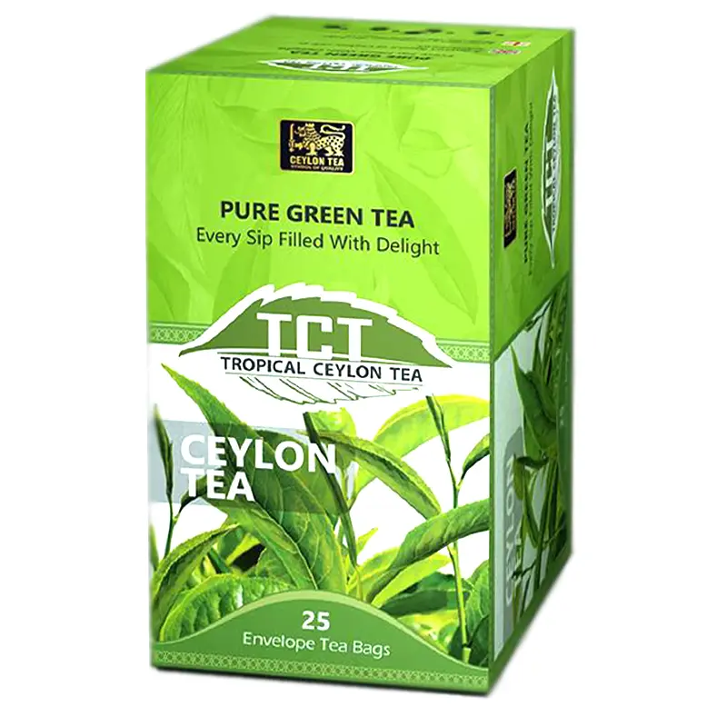

STORY
What is the Story of Ceylon Tea
Sri Lankan tea as many know as “Ceylon Tea” is one of the world’s finest. The plantation industry of Sri Lanka first began with the production of coffee but after its collapse in the early 1880s James Taylor, a British planter who arrived in 1852 introduced the tea industry to the country in 1867. The Sri Lankan highlands have the perfect climate that provides the humidity, cool temperatures, and rainfall that favor the production of high-quality tea. Sri Lanka also produces tea in low-elevation areas such as Matara, Galle and Ratanapura districts with high rainfall and warm temperature.
PORODUCT
What is the Produces of Ceylon Tea

BENEFITS
Benefits of Drinking Tea

GALLERY
A few pohotos about Ceylon Tea in Sri Lanka